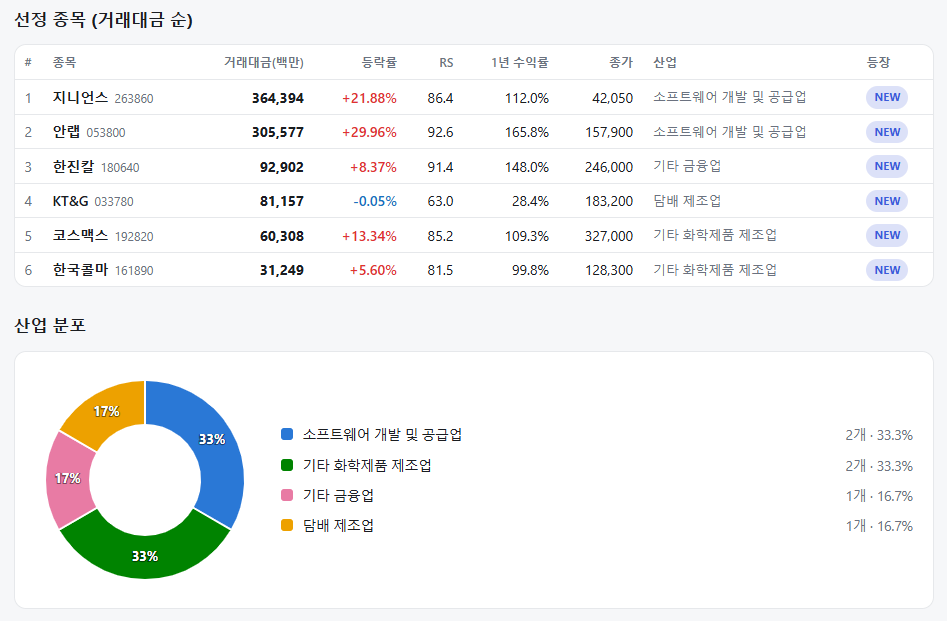
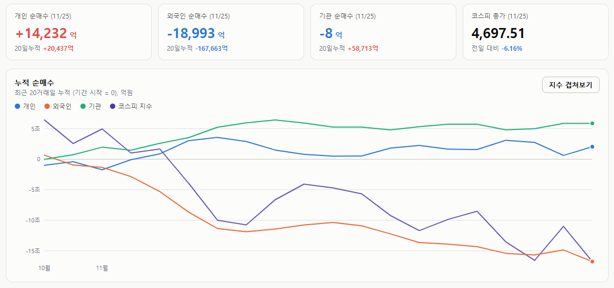

매일의 주도주 정리를 위해 기록합니다.
연속적으로 나온 종목들 또는 상승 후 조정받는 종목 위주로 리서치 해보시면 좋을 것 같습니다.

*오늘 퀀트픽으로는 '코스맥스' 입니다.
3Q26 역대 최대 실적: 매출 8,758억(+50% YoY), OP 833억(+95% YoY)으로 컨센 +7% 상회함. 국내 법인 기초 화장품 2배 성장, 분기 첫 매출 6천억 돌파함. 미국 +88%로 흑자 지속, 계절성 탈피함.
증권사 12곳 전원 매수: 목표가 36.3만~42만(평균 약 39만), 현재가 대비 약 20% 여력임. '27년 OP +30% 이상 전망(미래에셋). 평택 증설(CAPA +10%)과 글로벌 MNC 기초 수주 확대가 핵심임.
11/25 +12% 급등: 블랙프라이데이·연말 성수기, 10월 화장품 수출 +57%, 한중 FTA 후속 협상 타결이 겹침. 기술주 급락에 따른 소비재 순환매도 가세함.
#주도섹터
화장품·유통, 소프트웨어 및 제약·바이오
주요 업종 및 종목: 경기소비재(+3.56%), 건강관리(+3.38%), 소매(유통)(+6.70%), 소프트웨어와서비스(+5.83%), 인터넷과카탈로그소매(+8.85%), 소프트웨어(+7.82%), 화장품(+7.04%), 제약(+4.63%), 안랩(+29.96%), 실리콘투(+12.02%), 에이피알(+10.82%), 알테오젠(+6.20%), 아모레퍼시픽(+5.72%), 삼성바이오로직스(+5.66%).
분석: 지수가 크게 밀린 가운데서도 소분류 78개 중 33개가 올랐고, 소비재와 건강관리 쪽으로 매수세가 유입되었습니다. 화장품은 거래대금 7,355억 원에 에이피알과 아모레퍼시픽, LG생활건강(+4.00%)이 함께 올랐고, 인터넷과카탈로그소매는 실리콘투가 상승을 이끌었습니다. 소프트웨어는 거래대금 9,493억 원이 몰리며 안랩과 지니언스(+18.79%)가 급등했습니다. 제약은 거래대금 5,962억 원에 삼성바이오로직스와 셀트리온(+3.83%), 삼성에피스홀딩스(+11.03%)가 올랐고, 생물공학(+3.32%)에서도 코스닥 시가총액 1위 알테오젠이 강세를 보였습니다.
#조정섹터
반도체·IT 부품, 전력기기·기계 및 생명보험
주요 업종 및 종목: IT(-8.12%), 에너지(-4.86%), 산업재(-3.25%), 반도체와반도체장비(-10.33%), 기술하드웨어와장비(-8.50%), 전자장비와기기(-10.21%), 생명보험(-10.11%), 전기장비(-7.24%), 삼성전기(-12.00%), SK스퀘어(-11.19%), SK하이닉스(-11.05%), 삼성생명(-10.93%), 삼성전자(-9.87%), 효성중공업(-8.79%).
분석: 거래대금 13조 1,157억 원이 실린 IT가 대분류 가운데 가장 크게 내리며 지수 하락을 주도했습니다. 반도체와반도체장비는 거래대금 9조 6,492억 원에 삼성전자와 SK하이닉스, SK스퀘어가 모두 10% 안팎 급락했고, 코스닥에서도 주성엔지니어링(-11.42%)과 원익IPS(-10.89%)가 크게 밀렸습니다. 전자장비와기기는 거래대금 1조 968억 원에 삼성전기와 LG이노텍(-6.33%)으로 차익 실현 매물이 나왔습니다. 산업재에서는 전기장비가 효성중공업과 LS ELECTRIC(-6.31%) 약세로 내렸고, 기계(-4.28%)는 두산에너빌리티(-6.65%)가, 복합기업(-6.28%)은 삼성물산(-8.29%)과 두산(-15.16%)이 하락을 키웠습니다. 생명보험은 삼성생명 급락의 영향이 컸습니다.
#수급동향

코스피 지수는 -6.16% 하락한 4,697.51로 마감하며 전일 상승에서 하락으로 전환했습니다. 코스닥 지수는 -2.29% 하락한 650.64를 기록하며 역시 하락 전환했습니다.
유가증권시장에서 외국인 투자자는 1조 8,994억 원(누적 수급 집계 기준 -1조 8,993억 원, 20일 누적 -16조 7,663억 원)을 순매도했습니다. 개인은 1조 4,235억 원(집계 기준 +1조 4,232억 원, 20일 누적 +2조 437억 원)을 순매수했고, 기관은 10억 원(집계 기준 -8억 원, 20일 누적 +5조 8,713억 원)을 순매도했습니다.
코스피 시장에서는 상승 종목이 299개, 하락 종목이 594개(보합 20개)로 집계되어 하락 종목이 상승 종목보다 많았습니다.
사흘 만에 돌아온 자리 — 어제의 +6%와 오늘의 -6%가 말해주는 것
코스피는 어제 5,006.03(+6.32%)으로 5,000선을 되찾았다가, 오늘 4,697.51(-6.16%)으로 마감했습니다. 오전 9시 8분에 매도 사이드카가 걸렸고 장중 4,672까지 밀렸습니다. 외국인은 하루 만에 다시 1조 9,085억 원을 팔았습니다. 삼성전자 -9.82%, SK하이닉스 -10.97%. 월요일 종가(4,708)보다 낮은 자리이니, 어제의 반등을 모두 반납한 셈입니다.
① 어젯밤 미국에서 일어난 일
숫자만 보면 이상한 하루였습니다. 다우는 +0.85%로 5만 선을 되찾았는데 나스닥은 -1.48%, 필라델피아 반도체지수는 -7.88%였습니다. 엔비디아 -5.86%, 마이크론 -10.97%, AMD -8.86%. 반대로 헬스케어 +2.88%, 필수소비재 +1.73%, 부동산 +1.17%가 올랐습니다. 시장 전체가 내린 것이 아니라 반도체만 내렸습니다.
② 왜 하루 만에 되돌렸나
첫째, 월요일의 랠리는 좁았습니다. S&P500 상승분의 34%가 엔비디아 한 종목에서 나왔고, 시가총액 가중 지수와 동일가중 지수의 격차는 사상 최대 수준이었습니다. 거래량도 전날보다 적었습니다. 어제 글에 옮긴 미너비니의 조건, "반등이 이틀 이상 이어지고 가장 많이 빠진 종목 밖으로 넓어져야 한다"는 하루 만에 충족되지 않는 것으로 판명됐습니다.
둘째, 그대로였던 넷이 그대로 작동했습니다. 엔비디아 회계 검토와 의회 청문회는 일정대로 다가오고, 금리 인상은 2주 앞이며, 가격은 사태 전 수준을 회복하지 못했습니다. 한 사람의 복귀는 리더십 공백이라는 불확실성 하나를 지웠을 뿐입니다.
셋째, 다섯 번째가 추가됐습니다. 관세입니다. 월스트리트저널은 트럼프 행정부가 중국, 유럽연합, 일본, 한국을 포함한 16개 경제권에 새 수입 관세를 준비 중이라고 보도했습니다. 교역 상대국의 과잉 생산능력을 문제 삼는 조사에 따른 것이고, 한국·일본·유럽연합은 15% 이하에 머물 것이라는 관측이 있지만 세부 내용은 유동적입니다. 보도 직후 나스닥100 선물은 -2.5%까지 밀렸습니다. 수출 비중이 큰 한국 반도체에는 수출 규제에 이어 두 번째 정책 변수입니다.
통계도 예고한 대로였습니다. 변동성지수(VIX)가 하루에 9포인트 넘게 내린 것은 역대 10번째였는데, 과거에도 다음 날 S&P500은 내렸습니다. 어제 인용한 "이런 날 뒤 일주일간 상승 확률 29%"와 같은 방향입니다.
③ 외국인의 선택 — 삼성은 사고 하이닉스는 팔았다
어제 외국인은 8거래일 만에 8,130억 원을 순매수했습니다. 그런데 내용을 보면 삼성전자를 4,274억 원 사고 SK하이닉스를 2,413억 원 팔았습니다. 복귀 랠리 당일에도 하이닉스는 순매도 1위였습니다. 11월 9일부터 23일까지 외국인이 두 종목에서 판 약 2.7조 원 가운데 80%가 하이닉스였습니다.
11월 12일에 처음 나타났던 구도가 반복된 것입니다. 해석은 둘입니다. 하이닉스가 올해 더 많이 올라 차익 실현 압력이 크다는 것(연초 대비 +60.3% 대 삼성 +38.1%), 그리고 엔비디아 의존도입니다. KB증권은 2027년 전 세계 HBM 수요에서 엔비디아 비중을 38%, 구글을 37%로 추정합니다. 수요처가 엔비디아 밖으로 넓어질수록 고객이 다변화된 쪽이 유리하다는 계산입니다. 오늘은 두 종목이 함께 10% 안팎 내렸으니 이 구분도 급락장에서는 통하지 않았지만, 외국인이 어디서 먼저 돌아오는지를 볼 때 참고할 구도입니다.
④ 돈이 가는 곳
오늘 코스피가 -6% 내리는 동안 삼성바이오로직스는 +4%대, 셀트리온은 +3%대, 알테오젠은 +5% 안팎 올랐습니다. 코스닥은 -2%대로 코스피의 절반도 내리지 않았습니다. 미국도 같은 날 헬스케어가 가장 강했습니다. 지난주 숏을 청산한 미너비니는 바이오 종목을 새로 샀다고 밝혔고, 다른 트레이더들도 바이오와 제약만 매수 포지션으로 들고 있습니다.
지금 흐름이 주도주 교체의 시작인지, 약세장에서 잠시 피하는 방어적 이동인지는 아직 알 수 없습니다. 다만 지수가 내리는 날 오르는 업종이 생겼다는 것은, 11월 초의 "모든 것이 함께 내리던" 국면과는 다른 모습입니다.
오늘 밤에는 미국 10월 개인소비지출(PCE) 물가와 3분기 GDP가 나오고, 내일 미국은 추수감사절로 쉽니다. 관세의 세부 내용, 다음 주 의회 청문회, 12월 9일 FOMC가 차례로 기다립니다.
바닥의 실마리가 나오길 기다려야겠습니다.
오늘 하루도 수고하셨습니다.